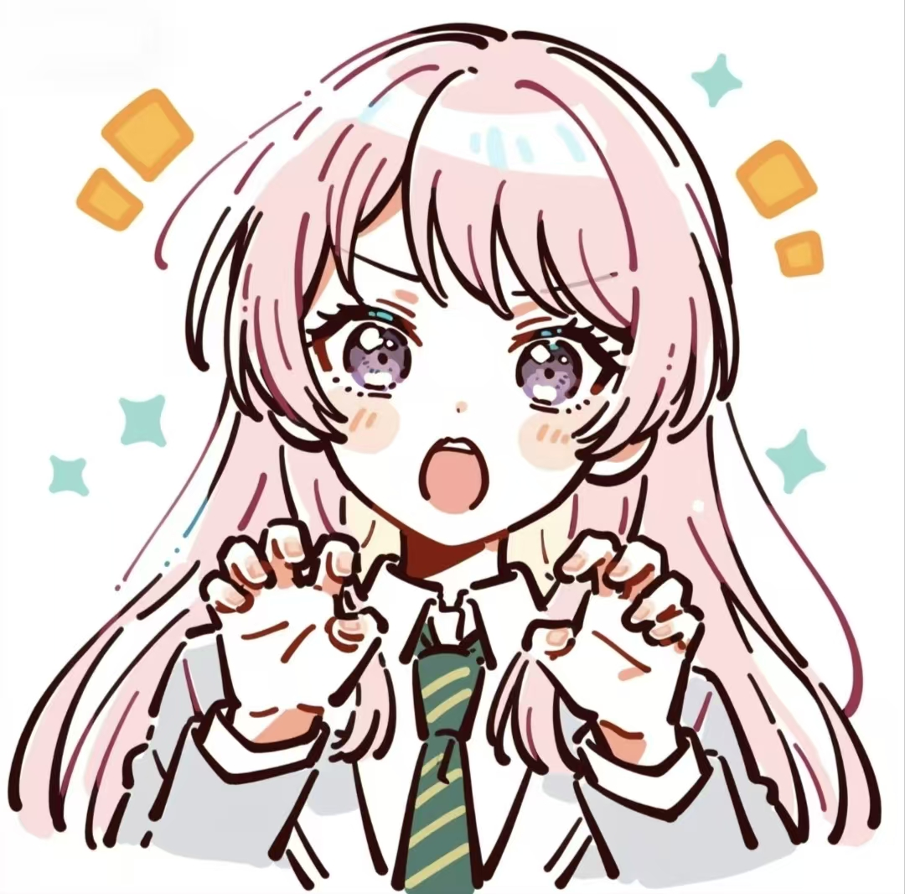

A LITTLE PIECE OF SKY / EST. 2026
如果大地变成一颗酸橙，
就分你最甜的那一瓣。
就分你最甜的那一瓣。
往下翻，慢慢认识我慢慢走，也会到达。 ✳
A SMALL INTRODUCTION一个还在认识自己的人STILL GROWING, STILL WONDERING.
a person, not a perfect story.
此刻状态 慢慢生长中
01 / A LITTLE ABOUT MEAbout Me你好，
你好，
这是我的另一面。
比起用几个标签介绍自己，
我更想让你看看，我在想些什么。
我会对一个问题追问很久，也会被一个很小的细节吸引。喜欢把模糊的想法写下来，让它们慢慢变成清楚的句子。
最近在接触代码，也在想，自己真正愿意花时间做的事是什么。答案还没写完，所以这里也会一直变化。
在这个角落，我想把感受写得诚实一点，把日子记得具体一点。你读到的，就是其中的一小部分。
✳ 好奇心常驻☁ 偶尔漫游✎ 认真感受中
还有一些想说的话 ↘02 / WEATHER INSIDE MY HEADWeather Inside
a small forecast of me ↘心里，也有天气。
有些感受不太好解释，就先把它们放在这里。
CURIOUS / 晴，有一点风想知道，
想知道，
世界为什么这样运转。
遇见一个有意思的问题，我总想再往里走一点。比起立刻得到答案，那个“原来如此”的瞬间，常常更让我着迷。
一小块心情，不是我的全部。也想留一点位置给☁ 没有目的的发呆✧ 突然想通的瞬间✎ 能说真话的地方
03 / THINGS I NEVER SAID OUT LOUDLittle Letters
把心事，写成来信✳
不必每一篇都有结论。有些话，只是想找个地方放下。
A NOTE IN MY POCKET今天的空白，留给下一件值得记住的小事。
04 / IF YOU HAPPEN TO STOP BYTo You
写给路过这里的你
一封没有寄出日期的信你好呀。
隔着屏幕，我们也许还不认识。但你愿意在这里停一会儿，我就觉得，这些零零碎碎的字有了一个很好的去处。
我想留住的不只是“发生了什么”，还有那些时候的自己：被什么打动，为什么犹豫，又偷偷期待着什么。
如果某一句话恰好让你想起了自己，那就带走它吧。就像走过一棵树，恰好接住了一片叶子。
愿我们都能遇见喜欢的风景。也愿今天，有一件小事让你觉得：还不错。
下次见。这片天空的记录者
UNTIL THE EVERYDAY BECOMES SOMETHING LOVELY.
↑